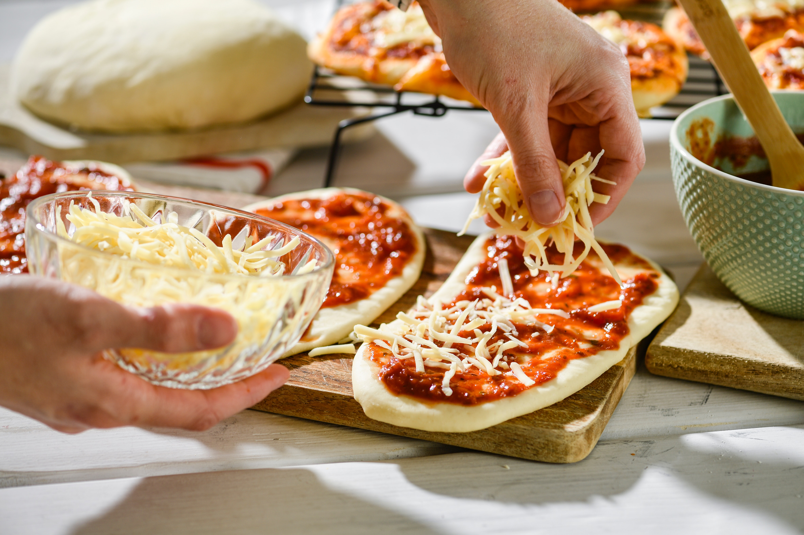
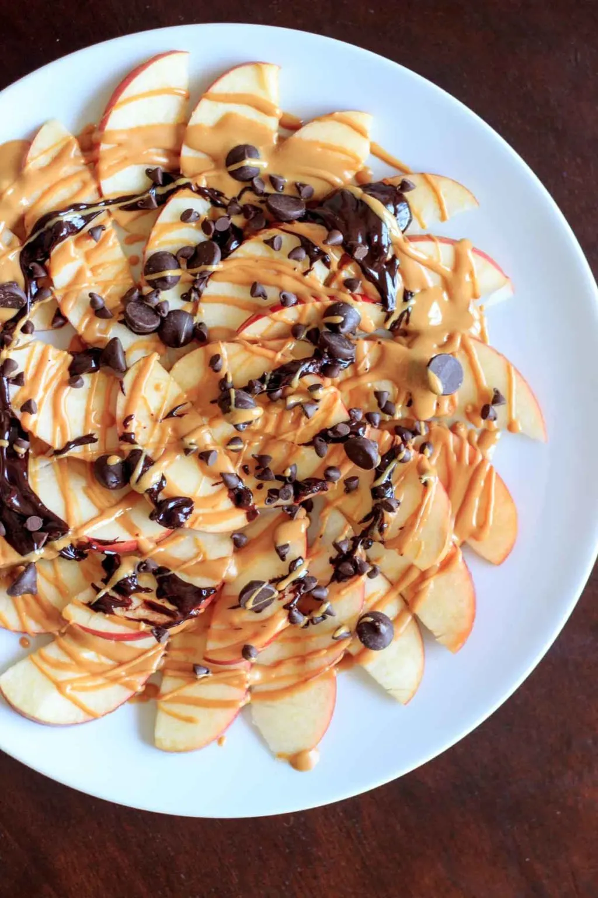
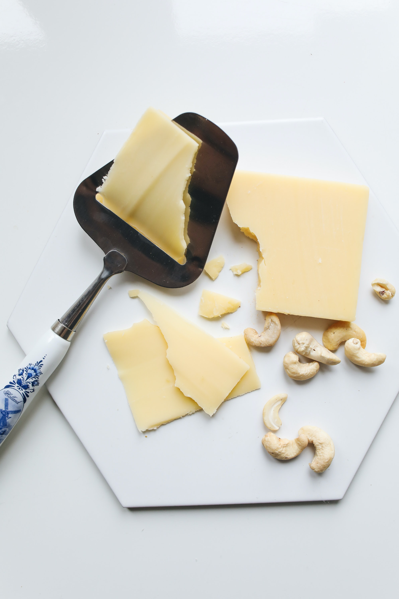
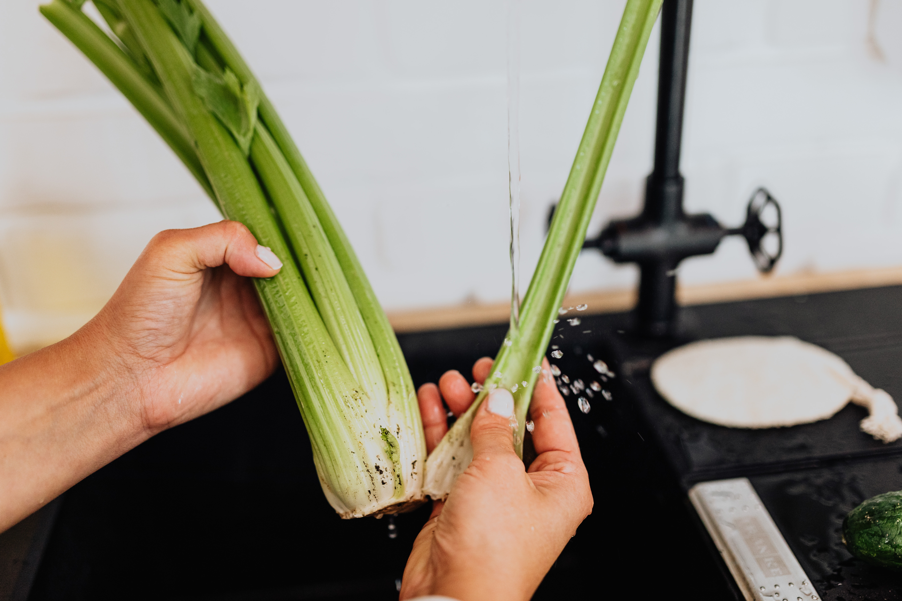

Peanut Butter and Bananas
- 1 whole wheat tortilla
- 2 tbsp peanut butter
- 1 banana, sliced
Directions:
Spread peanut butter evenly over the tortilla. Place sliced banana on one half of the tortilla. Roll the tortilla tightly and slice into pieces.
Mini Pizzas
- English muffins
- Tomato sauce
- Shredded mozzarella cheese
- Toppings of your choice (such as sliced pepperoni, diced vegetables, or cook
Directions:
Preheat the oven to 375°F (190°C). Cut English muffins in half and place them on a baking sheet. Spread tomato sauce over the muffin halves. Sprinkle shredded mozzarella cheese over the sauce. Add toppings of your choice. Bake for 10-15 minutes or until the cheese is melted and bubbly.
Apple Nachos
- Apples, sliced
- Peanut butter
- Chocolate chips
- Granola
Directions:
Arrange sliced apples on a plate. Drizzle peanut butter over the apples. Sprinkle chocolate chips and granola on top.
Turkey and Cheese Pinwheel
- Whole wheat tortillas
- Sliced turkey breast
- Sliced cheese
- Lettuce leaves
- Ranch dressing
Directions:
Lay tortillas on a flat surface. Layer turkey slices, cheese slices, and lettuce leaves on the tortillas. Drizzle ranch dressing over the fillings. Roll the tortillas tightly and slice into pinwheels.
Ants on a Log
- Celery sticks
- Peanut butter
- Raisins
Directions:
Cut celery sticks into small pieces. Spread peanut butter onto each celery piece. Place raisins on top of the peanut butter to resemble "ants".